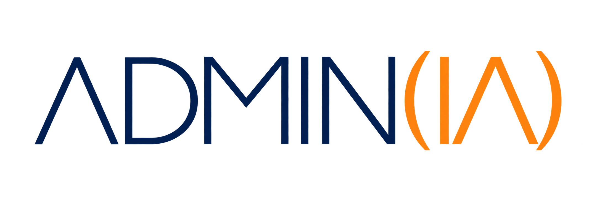
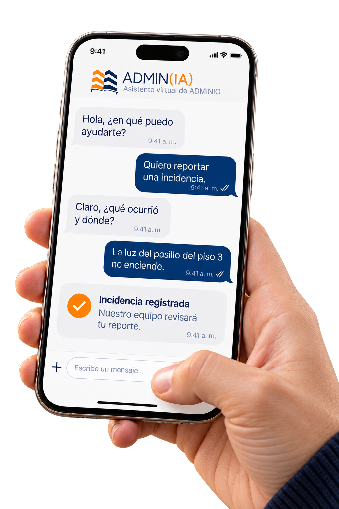
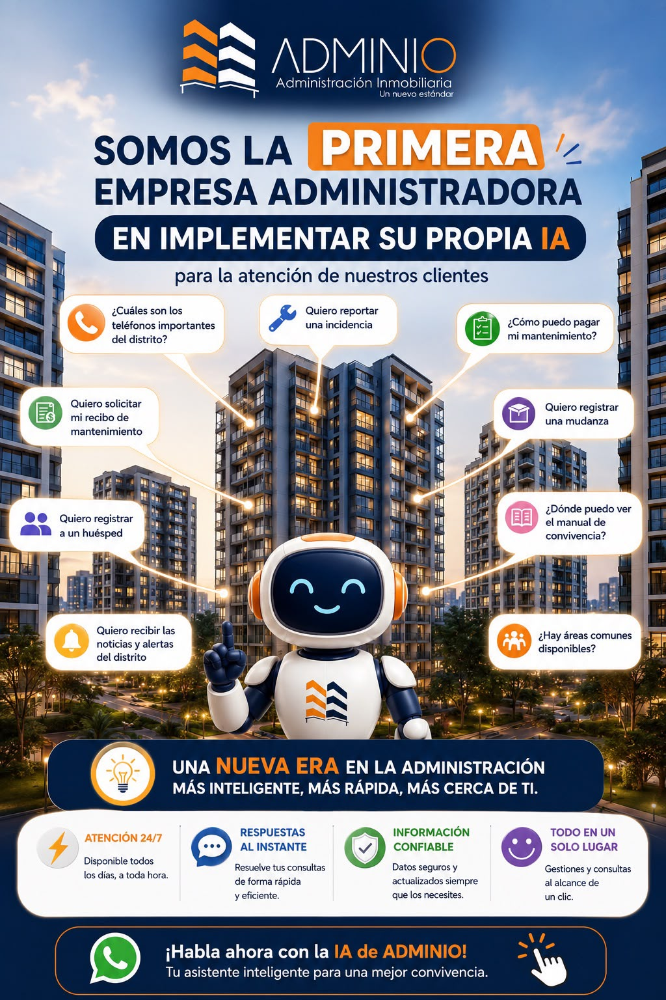

Pagos y recibos
Consulta cómo pagar tu mantenimiento y solicita tu recibo por los canales habilitados para tu edificio.
«Quiero solicitar mi recibo de mantenimiento».
TU COMUNIDAD. UNA NUEVA CONEXIÓN.

La inteligencia artificial de ADMINIO acerca la información de tu edificio a tu día a día. Consulta, encuentra orientación y conoce los pasos para gestionar lo que necesitas.
Describe lo ocurrido e indica la ubicación para orientar tu reporte al equipo de administración.

Un canal de consulta disponible a cualquier hora.
Orientación para encontrar lo que necesitas.
Consultas cotidianas en lenguaje sencillo.
Un apoyo para residentes y administración.
PARA PROPIETARIOS Y RESIDENTES
Las funciones presentadas por ADMINIO reúnen las consultas y gestiones más habituales de la vida en comunidad.
Consulta cómo pagar tu mantenimiento y solicita tu recibo por los canales habilitados para tu edificio.
«Quiero solicitar mi recibo de mantenimiento».
Recibe orientación para reportar una incidencia y aportar los datos necesarios para que la administración pueda atenderla.
«Quiero reportar una incidencia».
Consulta el procedimiento para registrar huéspedes o una mudanza, de acuerdo con las reglas de tu comunidad.
«Quiero registrar una mudanza».
Encuentra orientación para acceder al manual de convivencia y conocer los procedimientos de tu edificio.
«¿Dónde puedo ver el manual de convivencia?».
Consulta la disponibilidad de áreas comunes y los pasos para gestionar su uso, según el sistema habilitado.
«¿Hay áreas comunes disponibles?».
Consulta teléfonos importantes y cómo acceder a noticias y alertas del distrito disponibles en el servicio.
«¿Cuáles son los teléfonos importantes del distrito?».
Las gestiones disponibles dependen de la configuración y los datos de cada edificio. Una consulta o solicitud no sustituye la confirmación de un pago, una reserva o una autorización por parte del sistema o del responsable.
PARA NUESTROS ADMINISTRADORES
Al orientar consultas frecuentes y facilitar el acceso a información, ADMIN(IA) ayuda a reducir tareas repetitivas y a enfocar la atención del equipo.
Los residentes pueden conocer los pasos de una gestión antes de acudir al administrador, facilitando una atención más ordenada.
Un canal para orientar sobre procedimientos y documentos de la comunidad, a partir de la información disponible.
El equipo puede dedicar mayor atención a la coordinación operativa y a los casos que requieren criterio y seguimiento humano.
Con las integraciones y permisos adecuados, la IA también puede ayudar a preparar borradores de comunicados, resumir incidencias, clasificar solicitudes o analizar reportes. Son posibilidades de ampliación; su disponibilidad debe confirmarse con ADMINIO.
TECNOLOGÍA CON CRITERIO
La utilidad de las respuestas depende de contar con información vigente y autorizada de la comunidad.
Pagos, permisos y reservas requieren la validación correspondiente. El administrador mantiene el control de las decisiones.
Los casos particulares se revisan con el equipo. Ante una emergencia, utiliza directamente los canales de emergencia de tu edificio o localidad.
CONOCE ADMIN(IA)
Explora las consultas y beneficios que presentamos para nuestra comunidad.
Ver presentación completa ↗
DA EL SIGUIENTE PASO
Consulta al equipo cómo acceder y qué funciones están habilitadas en tu comunidad.